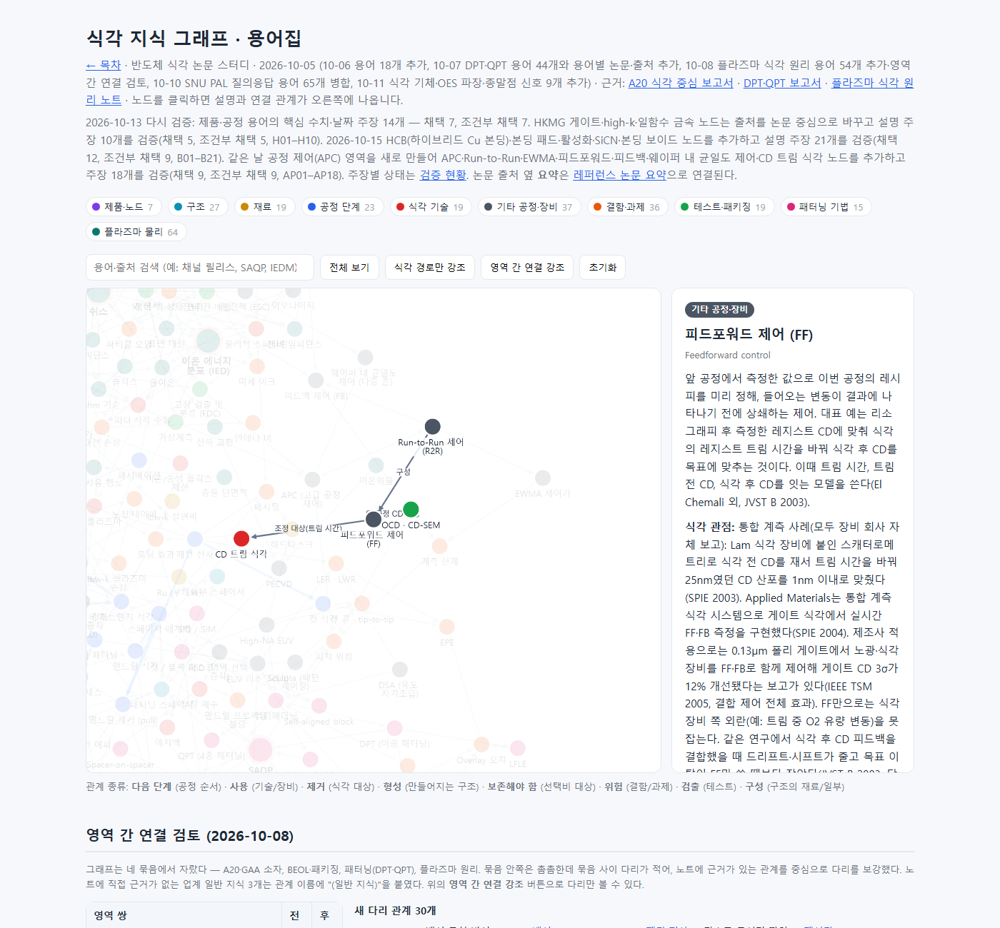
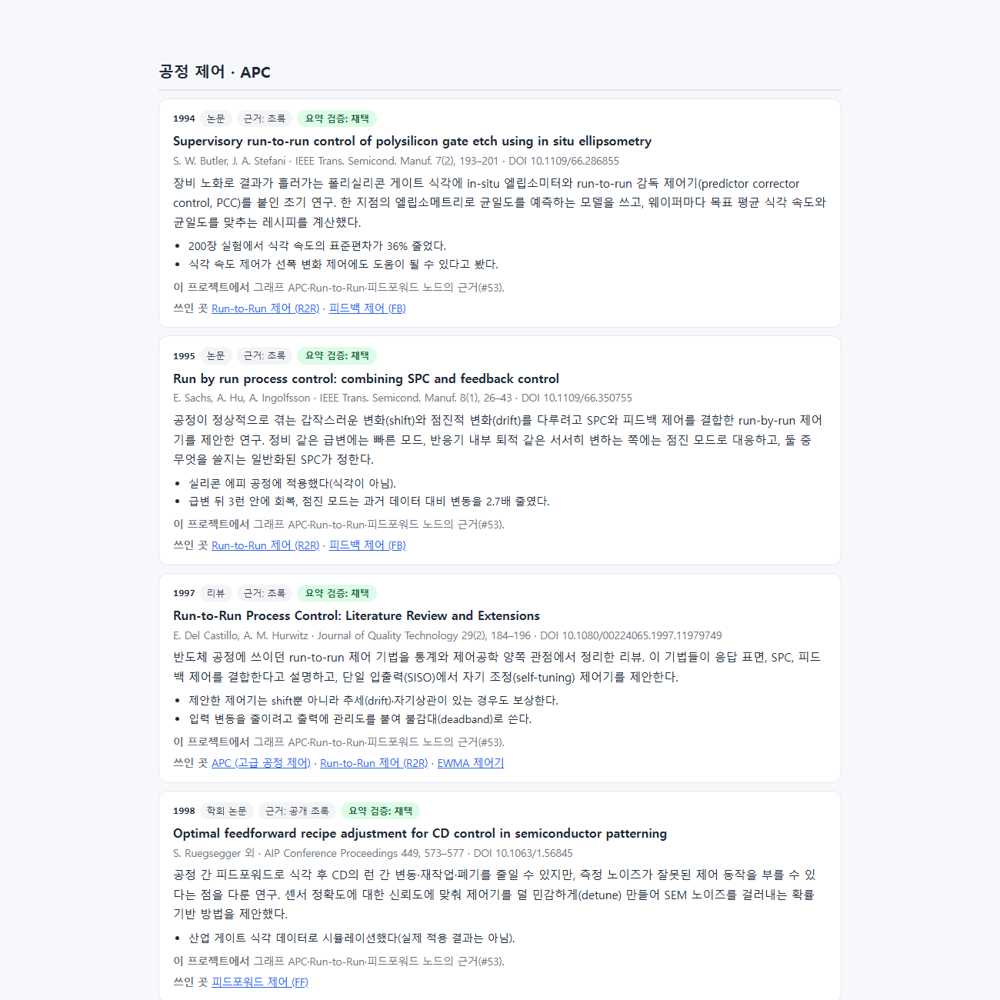
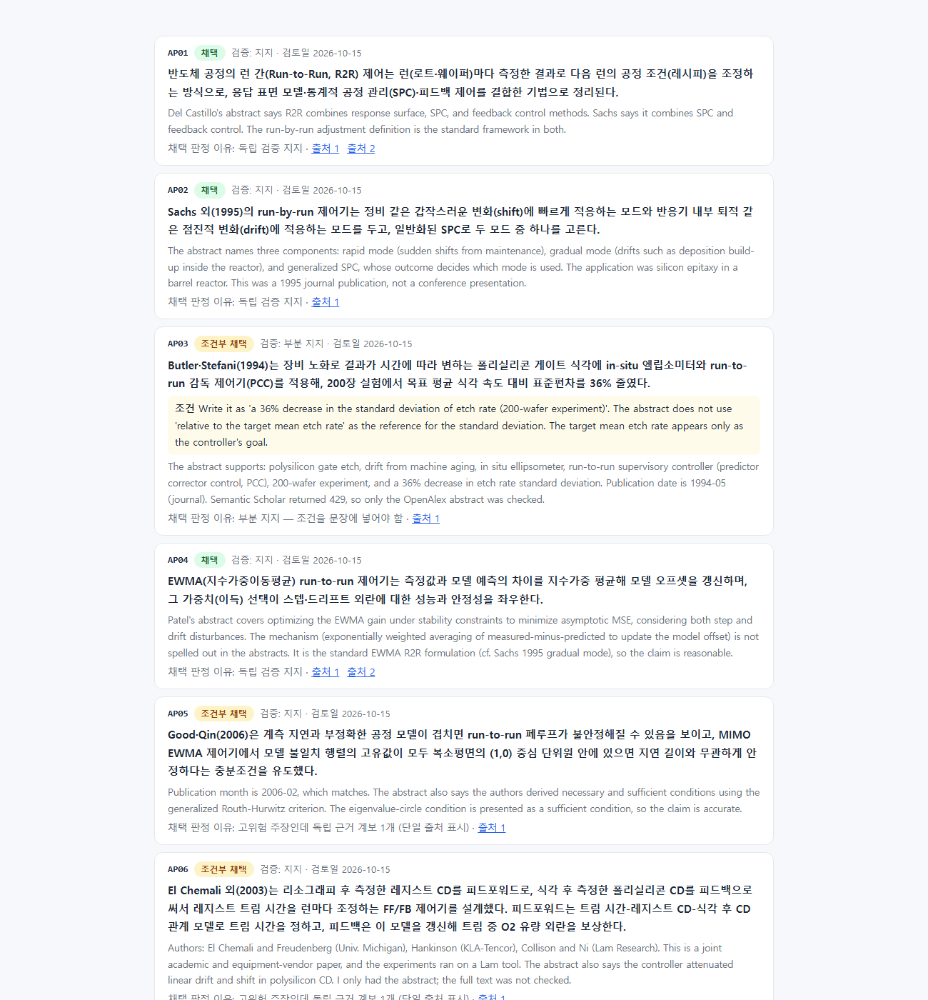

#53
식각 APC 내용 추가 — 피드포워드 중심
지시 (원문)
ETCH APC 관련 내용 추가. 특히 Feedforward 내용 필요.
분석 (Claude의 정리)
- 그래프에는 이미 가상계측(VM), 고장 검출(FDC), 공정 드리프트, 챔버 벽 상태 변화, OCD·CD-SEM, 종말점 노드가 있었다. 대부분 SNU PAL 질의응답이 근거다. 그런데 이 신호들로 레시피를 실제로 고치는 제어(APC·Run-to-Run·피드포워드·피드백) 개념은 없었다.
- 피드포워드를 가장 자세히 다룬다. 앞 공정 측정값(리소 후 CD)이 무엇을 바꾸는지(트림 시간), 왜 피드백과 함께 쓰는지, 노이즈·계측 지연 같은 위험이 무엇인지, 실제 적용 수치가 어떤지를 담는다.
- 새 사실이므로 검증 절차(장부 → 독립 검증 → gate)를 거치고, 새로 인용하는 논문은 #51 규칙대로 요약한다.
과정
- 기존 그래프에서 관련 노드와 연결을 확인했다(VM·FDC·드리프트·OCD·종말점·ESC·맨드릴 트림).
- astra(high, 백그라운드)에 정의, 식각 피드포워드 사례와 수치, 피드백·드리프트, 웨이퍼 내 다중 존 제어, 위험(계측 지연·EWMA 이득·혼합 제품·FF/FB 상호작용)을 물었다. 같은 시각 jev에게 범위와 단계를 물었다.
· 범위: "그래프에 노드 5~7개 추가, 기존 VM·FDC·OCD·드리프트·패터닝 노드와 연결, 피드포워드를 가장 자세히"(확률 0.99, 신뢰도 0.98)
· 단계: 새 13단계(0.91, 신뢰도 0.82)
둘 다 따랐다. -
lit_search.py7개 질의(R2R 리뷰, 식각 CD 피드포워드, EWMA 안정성, 게이트 CD, VM 기반 APC, 통합 계측 트림, 웨이퍼 내 균일도)로 후보를 찾았다. OpenAlex로 초록을 확인했다. 핵심 근거는 El Chemali 외(JVST B 2003)다. 리소 후 레지스트 CD를 피드포워드로, 식각 후 폴리 CD를 피드백으로 써서 레지스트 트림 시간을 조정한다. - 장부
ledger/apc.json(비공개)에 주장 13개(AP01–AP13)를 적었다. lint 오류 0, DOI 12개 실재. 작성 과정을 모르는claim-verifier4개에 blind 입력만 넘겼다. - 1차 gate: 채택 6, 조건부 7. 지적은 두 가지였다.
· AP03(Butler·Stefani 1994): 36%는 "목표 대비"가 아니라 식각 속도 표준편차의 감소다. 그래프와 요약에서 "목표 대비"를 뺐다.
· AP06(El Chemali): 검증자가 "피드백이 모델을 갱신한다"를 초록에서 찾지 못했다. 그런데 이 문장은 초록 4번째 문장에 실제로 있다. 그래서 위치를 장부에 적어 다른 검증자에게 다시 넘겼고, 지지 판정을 받았다. - astra 결과를 받았다. 피드포워드 실측 사례를 더 찾았다.
· Kota 외(SPIE 2003, Lam·KLA-Tencor·AMD): 식각 장비에 통합한 스캐터로메트리로 트림 시간을 조정해 CD 산포를 25nm에서 1nm 이내로 줄였다.
· Mui 외(SPIE 2004, Applied Materials): 통합 계측 식각 시스템으로 실시간 FF·FB를 구현했다.
· Williams 외(IEEE TSM 2005, Intel): 노광·식각 결합 FF·FB로 게이트 CD 3σ가 12% 개선됐다.
· Wang 외(2005): STI 식각, 계측 지연이 있는 R2R 추정을 다뤘다.
· Ringwood 외(2010) 리뷰: 식각은 대체로 개루프이고, 잔류물과 정비 편차가 드리프트를 만든다.
astra 지적 반영:
· 수치들은 서로 다른 지표(목표 근접, 들어온 산포 대비, 결합 루프 3σ)라 서로 비교하지 않는다.
· 막두께→식각 시간, 하드마스크 단독 트림, SADP/SAQP 맨드릴 트림의 피드포워드 실측 결과는 찾지 못했다. 그래서 그래프에 넣지 않았다.
· Mui의 3σ 수치(9.0→3.1nm 등)는 초록에 없어 쓰지 않았다.
주장 5개(AP14–AP18)를 추가해 검증했고, 모두 지지였다. - 최종 gate: 주장 18개 — 채택 9, 조건부 채택 9, 보류·제외 0. 조건부 9개 중 8개는 "결론을 좌우하는 수치·사례인데 근거가 1곳"이라는 이유다. 대부분 장비 회사나 제조사의 자체 보고다. 이 사정을 그래프 문장에 그대로 적었다.
- 새로 인용하는 논문 17편의 요약을 새 영역 "공정 제어 · APC"로
kb/papers/papers.json에 썼다. 핵심 문장을 검증자 3개에 넘긴 결과는 17편 모두 채택이었다. 레퍼런스 논문은 58편에서 75편이 됐다. - 그래프 원본에 새 영역 "공정 제어(APC)"를 만들었다(
types.json). 노드 7개, 관계 16개, 출처 17개를 추가했다.
· 노드: APC, Run-to-Run 제어, EWMA 제어기, 피드포워드 제어, 피드백 제어, 웨이퍼 내 균일도 제어(다중 존), CD 트림 식각(패터닝 영역)
· 관계: OCD → FF(앞 공정 CD 측정)·FB(식각 후 CD 측정), FF → CD 트림 식각(트림 시간), 드리프트·챔버 벽 상태 → FB(보상 대상), VM → APC(예측값), FDC ↔ APC, 정전척 → 웨이퍼 내 제어(다중 존 온도), APC → 피치 워킹(리소·증착·식각 결합 제어), 맨드릴 식각 → CD 트림
· 웨이퍼 내 제어에는 리소 쪽 손잡이(다중 존 PEB)로 식각의 계통적 분포를 미리 상쇄한 사례(SPIE 2007, 계통적 분포 40% 감소)를 넣었다. 장비 쪽 사례(다중 존 ESC + 국부 보정, CDU 60% 개선, Lam 보고)도 넣었다. 다만 Lam 초록의 "3σ < 1nm"이 기준값인지 결과인지 모호하다는 검증자 지적을 그대로 적었다. - 공개 상태를 내보내고 build했다(
kb/claims/apc.json).
· 검증 현황: 주장 150개
· 그래프: 노드 266개, 관계 577개
· 논문 요약: 75편
그래프 안내 문구와 "영역 간 연결" 설명에 다섯 번째 묶음을 적었다. 링크 검사와 요약 연결 검사(빠진 곳 0)를 통과했다. - 로컬 서버에서 스크린샷 3장을 찍었다(요약 페이지·검증 현황은 #52와 같은 캡처용 사본 방식).
결과 / 증거
성공 식각 지식 그래프에 다섯 번째 영역 공정 제어(APC)를 만들고 노드 7개를 넣었다. 기존 계측·진단 노드(OCD·VM·FDC·드리프트·정전척)가 실제로 레시피를 고치는 제어로 이어지도록 연결했다.
- 피드포워드 노드에 담은 내용:
· 정의와 대표 구조: 리소 후 CD → 레지스트 트림 시간 → 식각 후 CD 모델
· 피드백과 결합하는 이유: 식각 장비 쪽 외란은 FF로 못 잡는다
· 측정 노이즈 위험과 대응: 신뢰도에 따른 detune
· 실측 사례: 25nm→1nm(Lam·KLA), 게이트 CD 3σ 12%(Intel), IBM 양산 적용. 모두 회사 자체 보고로 표시했다. - 검증:
· 그래프 주장 18개: 채택 9, 조건부 9
· 새 논문 요약 17편: 모두 채택
· 검증자가 초록 문장을 놓친 1건(AP06)은 위치를 적어 다시 검증했다. - 남은 한계:
· 대부분 초록 기준이다.
· 막두께→식각 시간, 하드마스크·맨드릴 트림의 피드포워드는 공개 실측 근거를 찾지 못해 넣지 않았다.
· SEMI E133(APC 시스템 인터페이스 표준)은 공개 설명만 있어 이번에는 출처로 쓰지 않았다.
피드포워드 노드 열기 → · 검증 현황(AP01–AP18) → · 논문 요약: 공정 제어 →


